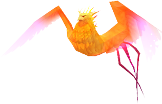
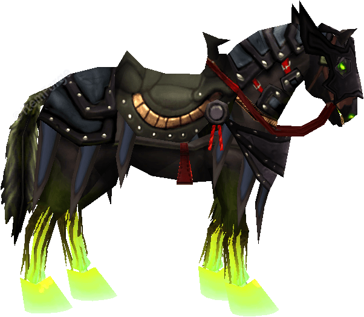
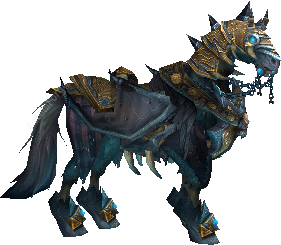
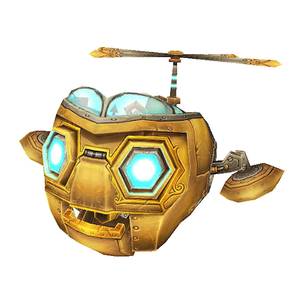
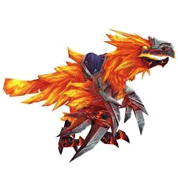
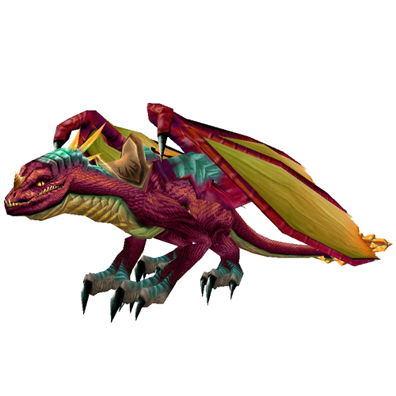
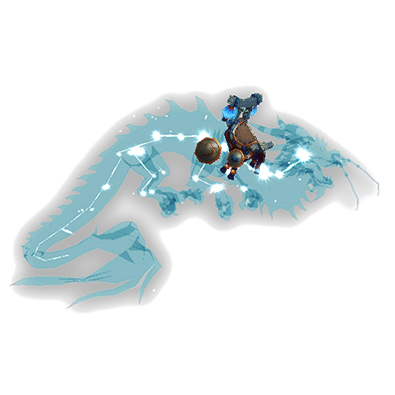
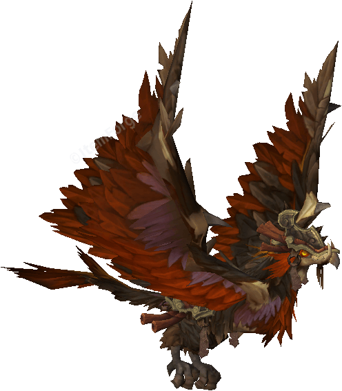

- The Burning Crusade
- Wrath of The Lich King
- Cataclysm
- Mists of Pandaria
Ashes of Al'ar
Al'Ar był ukochanym pupilem Kael'Thasa Słońcobieżcy, który często chwalił się, że nie grozi mu śmierć. Może miał rację.
Drop: Kael'thas Słońcobieżca
Location: The Eye, Tempest Keep
Drop Chance: 1.70%

Fiery Warhorse
Był jednym z najbardziej złośliwych rumaków w Karazhanie
Drop: Attumen the Huntsman
Location: Karazhan
Drop Chance: 1.1%

Invincible
Słynny rumak Arthasa Menethila, który służył swojemu panu za życia i śmierci. Dosiadanie go jest prawdziwym wyczynem siły.
Drop: Król Lisz
Location: Cytadela Korony Lodu
Drop Chance: 0.78%

Mimiron's Head
Znak rzemiosła tytanów zgromadzony przez Starego Boga, Yogg-Sarona. Obecnie największa pojedyncza głowa mechanicznego gnoma w Azeroth.
Drop: Yogg-Saron
Location: Ulduar
Drop Chance: 0.99%

Podobnie jak w przypadku ich matriarchini, Alysrazor, wściekłość i zapał tych żywiołów jest nie do ugaszenia.
Drop: Alysrazor
Location: Firelands
Drop Chance: 2.11%

Experiment 12-B
Niektórzy wierzą, że Experyment 12-B jest wynikiem tajnej inicjatywy SI-7, inni uważają że jest to dzieło majsterkowania goblińskich naukowców. Nie jest to istotne, pewne jest jednak to, że dano mu siły, prędkości i zwinności. Experyment 12-B był sukcesem!
Drop: Mniejsza Skrzynia Aspektów
Location: Smocza Dusza
Drop Chance: 1.2%

Astral Cloud Serpent
Pandareni wierzą, że Astral Cloud Serpenty posiadają odpowiedzi na największe tajemnice życia. Szkoda że nie potrafią mówić.
Drop: Skrzynia czystej energii
Location: Mogu'shan Vaults
Drop Chance: 4%

Clutch of Ji-Kun
Chociaż Ji-Kun biesiadowała na nieudanych kreacjach rzeźbiarzy mogu, jej potomstwo jest skłonne zjadać więcej zwłok pieszych.
Drop: Ji-Kun
Location: Tron Grzmotu
Drop Chance: 2.69%
